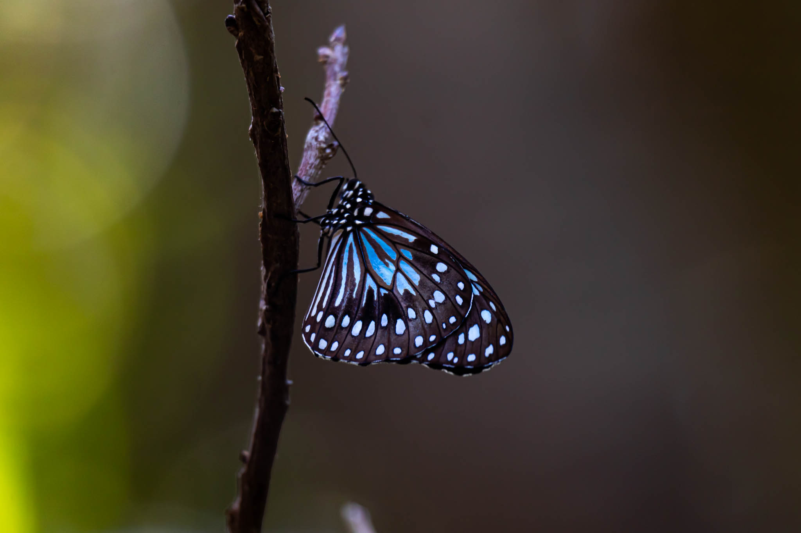

AUSTRALIA
Llevo recorriendo Australia por más de 3 años, visitando cada uno de sus rincones. Viví en pueblos sacados de un cuento, como Exmouth, Margaret River, Broome, Port Douglas y Esperance, mi segundo hogar, además de recorrer el resto del país en distintas etapas.
La naturaleza, la fantástica y diversa vida animal, el surf, el desierto, son solo algunos de las partes que hacen de este país, uno de los más especiales para cualquier viajero del mundo.




AUSTRALIA